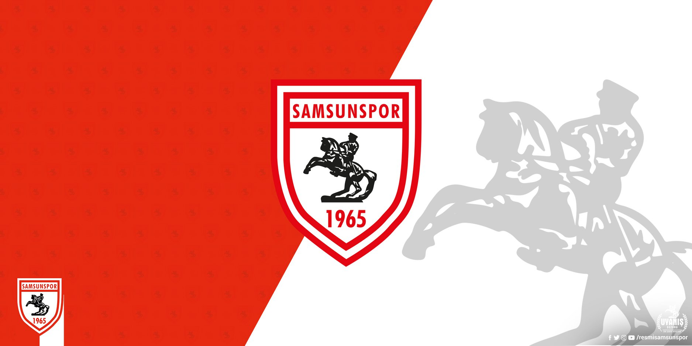

SAMSUNSPOR
Samsunspor, Samsun merkezli faaliyet gösteren dernek yapısındaki Türk çok takımlı spor kulübü. 1927
yılında siyah-beyaz renklerle kurulan kulüp 30 Haziran 1965'te kırmızı-beyaz renkleri benimseyerek
profesyonel liglere katılmış olup resmî kuruluş tarihi de bu tarih olarak kabul edilmektedir.
Geçmişte sekiz farklı branşta faaliyet gösteren kulübün günümüzde yalnızca profesyonel liglerde
mücadele eden basketbol ve futbol takımları bulunmaktadır. Basketbol takımı ikinci seviye lig olan
Türkiye Basketbol Ligi'nde bulunurken futbol takımı ise üçüncü seviye lig olan 2. Lig'de yer
almaktadır. İki takım iç saha maçlarını 19 Mayıs Stadyumu ve Mustafa Dağıstanlı Spor Salonu'nda
oynamaktadırlar.
Tarihçe
Samsun'da futbolun geçmişi 1909 yılında kurulan Tenvîr-i Efkâr Gençler Kulübüne dek
uzanmaktadır.
Samsun'un ilk futbol kulübü olma özelliğini taşıyan bu kulüp Samsun Limanı başkanı ile oğulları
Haydar ve Faruk Beyler önderliğinde kurulmuş, ilk başkanı Boşnakzâde Ahmet Resai Bey olmuştur.
Kulübün özellikle şehirdeki Ermeni ve Rum gençlerinin kurduğu takımlarla yaptığı maçlar ilgi
odağı olsa da Balkan Savaşlarının patlak vermesiyle faaliyetlerine son vermek zorunda kalmıştır.
Hemen ardından 1912 yılında dârülmuallim ve sultânî öğrencileri tarafından kulüp niteliği
taşımayan fakat rakipleriyle karşılaşacak nitelikte bir takım oluşturulmuş, bu girişim de çok
uzun ömürlü olmamıştır.
919 yılında ise kırmızı-beyaz renkleriyle kent tarihinin ikinci kulübü olan Samsun İdman Yurdu
kurulmuştur.
1921 yılında ise Samsun İdman Yurdu'nun dışında faaliyet gösterecek ikinci bir futbol kulübü
kuruldu. Bu kulübün adı Al Yıldız İdman Ocağı, kurucusu ve ilk başkanı ise Gıyas Bey'di.
1923 yılında kurulan kırmızı-beyaz renkli Zafer-i Millî İdman Derneği, Samsun'daki üçüncü faal
futbol kulübü olmuştur.
Siyah-beyaz renklerle mücadele eden Samsunspor futbol temelli bir kulüp olarak kurulmasına
karşın bu dönemde futbol, voleybol, atletizm ve denizcilik branşlarında faaliyet göstermekteydi.
1940'larda çeşitli imkânsızlıklar nedeniyle kulüp bir süre faaliyetlerine ara verse de 16 Kasım
1950 tarihinde yeniden faaliyete geçmiş ve bu dönemde faaliyet alanlarına güreş de eklenmiştir.
30 Haziran 1965 tarihinde Samsun'da bulunan beş amatör lig takımı olan 19 Mayıs, Fener
Gençlik, Akınspor ve Samsun Galatasaray Gençlik kulüpleri Samsunspor'a katılarak dönemin Ticaret
Bankası Samsun Şube Müdürü Kadri Ersan'ın başkanlığında kırmızı-beyaz renkleri benimseyen
Samsunspor vücut bulmuş ve resmen Türkiye 2. Futbol Ligi'nde boy göstermeye başlamıştır.
Samsunspor'u oluşturan kulüplerin birleştiği yıl olan 1927, kulübün esas kuruluş yılı olmasına
rağmen resmî kuruluş tarihi profesyonelliğe başvurduğu tarih olan 30 Haziran 1965 olarak
işlenmiştir.
Renkler ve Arma
Kulübün amatör yıllarında renkleri siyah ve beyaz iken 1965 yılındaki profesyonelleşme sırasında
dört farklı kulüp Samsunspor'a katılmış ve yeni renk arayışına girilmiştir. Sonuç olarak millî
bayrakta kullanılan renkler olan kırmızı ve beyazda karar kılınmıştır.
1989 yılında geçirilen kazanın ardından da bu renklere hayatını kaybeden futbolcuların anısına
siyah da eklenmiştir.
20 Ocak 1989 Kazası
Bu tarihte Malatyaspor ile oynayacağı maç için bu kente giden Samsunspor takımı sabah saaat
09:30 sularında Amasya'nın Havza ilçesinde bir kamyonla çarpıştı ve otobüs uçuruma yuvarlandı.
Samsunspor üç oyuncusunu, teknik direktörünü, şoförünü kaybetti. Kazada Samsunspor Teknik
Direktörü Nuri Asan, futbolcular Muzaffer Badalıoğlu ve Mete Adanır ile otobüs şoförü Asım Özkan
olay yerinde, futbolcu Zoran Tomić ise Yugoslavya'da altı ay komada kaldıktan sonra vefat etti.
Bu kazada hayatta kalan birçok oyuncu ve kafile üyesi de ciddi şekilde yaralanmış ve/veya sakat
kalmıştı.
Trafik kazasından dolayı Samsunspor 1988-89 sezonuna devam edemedi, sezonun sonuna dek tüm
maçlarda hükmen 3-0 mağlup sayıldı. Buna rağmen federasyon tarafından sağlanan özel statü ile
ligde bırakılarak "Onur Şampiyonu" ilan edildi.